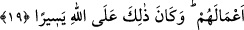
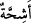
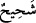

çok lütuf sahibi olan O’dur.
18. Allah, içinizden (savaştan) alıkoyanları ve yandaşlarına: “Bize katılın”
diyenleri gerçekten biliyor. Zaten bunların pek azı savaşa gelir.
“Allah,
içinizden”
Medine
münafıklarından
savaştan
“alıkoyanları
ve
yandaşlarına:” küfürde ve nifakta kardeşleri olanlara: “Bize katılın” bize yaklaşın
“diyenleri gerçekten biliyor.” Burada hitap, mutlak olarak îmânını ızhar edenleredir.
Yâni elbette Allah insanları Rasûlullah (s.a.)’e yardım etmekten alıkoyanları, insanları
hayır yolundan döndürenleri pek iyi bilir. Bunlar kim olursa olsun münafıktırlar.
Münâfıkların âyetteki bu ifâdesi, onların bu sözü söylerken İslâm askerinin arasından
çıktıklarını, düşmandan kaçarak Medine’ye doğru yöneldiklerini göstermektedir.
“Zaten bunların pek azı savaşa gelir.” Çünkü onlar hep mazeretler ileri sürerler,
mümkün oldukça savaştan geri dururlar. Ya da mü’minlerle birlikte savaşa çıkıp güya
onlarla berabermiş gibi gözükürler. Mecbur kaldıkları çok az zaman dışında onları hiç
ön cephede ve savaşırken göremezsin. Elbette bu da savaştan kaçmadıkları takdirdedir.
19. (Gelseler de) size karşı pek hasistirler. Hele korku gelip çattı mı, üzerine
ölüm baygınlığı çökmüş gibi gözleri dönerek sana baktıklarını görürsün. Korku
gidince ise, mala düşkünlük göstererek sizi sivri dilleri ile incitirler. Onlar îman
etmiş değillerdir; bunun için Allah onların yaptıklarını boşa çıkarmıştır. Bu, Allâh’a
göre kolaydır.
Gelseler de “size karşı” yardım etmekte yahut fakir müslümanlara Allah yolunda
infakta bulunmakta “pek hasistirler.” Ya da zafer ve ganîmetin size âid olmasını
istemezler.
“
” kelimesi, cimri demek olan “
” kelimesinin çoğuludur. Râğıb şöyle